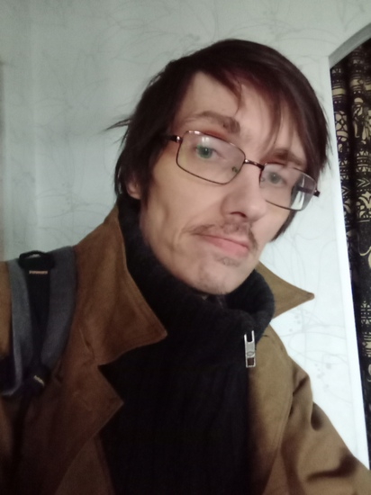

Степан Мамакин: Импровизация не может быть банальной
Егор Новожилов: Привет, Степан! Как у вас на севере погода нынче?
Степан Мамакин: Привет! Лето холодное в этом году, но мне очень комфортно в такую погоду.
Егор Новожилов: Я знаю, что твой любимый сезон - зима. Почему это так?
Степан Мамакин: Раньше любил переходные сезоны. А в какой-то момент осознал, что зимой мне уютнее всего, вообще - зимнее время волшебно...
Егор Новожилов: Я знаю тебя как крайне разностороннюю личность. Ты увлекаешься Шахматами, литературой, музыкой, рисованием... А какой вид искусства всё-же ближе тебе?
Степан Мамакин: Я не могу выделить что-то одно, потому что когда я начинаю уставать от чего-то, то просто переключаюсь на другой вид деятельности, очень удобно иметь что-то в запасе. А в подростковом возрасте я хотел быть именно музыкантом в первую очередь.
Егор Новожилов: Твоя группа называется "КОФР ИУДЫ". Почему такое название?
Степан Мамакин: Просто меня переклинило в определенный момент, а потом так и осталось, хотя было много других вариантов.
Егор Новожилов: Значит банально импровизация?
Степан Мамакин: Не, хотелось что-то загадочное с религиозным уклоном, так как религия в моей жизни занимает не последнее время. Плюс мне чисто фонетически понравилось сочетание звуков в названии, и это очень индивидуально. Кроме того, Иуда, не смотря на свою как бы негативную роль - одна из ключевых фигур, без которого не было бы христианства. И еще думаю, что импровизация не может быть банальной...
Егор Новожилов: Я знаю, что ты хорошо играешь в шахматы. В игру королей... Важна ли для тебя победа за доской или ты не азартен?
Степан Мамакин: Я вообще считаю, что азарт и целеустремленность - это разные вещи. В шахматах, как бы ни смешно это прозвучало - не люблю проигрывать))
Егор Новожилов: А в рисовании ты видишь себя больше как график или живописец?
Степан Мамакин: Гораздо чаще я делаю все-таки графические работы, хотя был опыт работы с масляными красками. Но большую часть своих картин я отнес на помойку как-то давно перед отъездом в Омск. К слову, через час их разобрали - не знаю, кому это было нужно)) Да и вообще у моих картин какая-то судьба такая: один из старых друзей отнес подаренные мной картины и рисунки на помойку (кроме одной), также сделала одна знакомая из Мончегорска, руководитель фото-кинокружка, куда я ходил в 90-е годы. Одна картина вообще была уничтожена, но я сам виноват - плохо себя вел. Картина называлась: "Я бы умер, если бы это увидел!" Наверно, стоит сделать ремейк этой картины) Ее даже хотели у меня купить, но я не продал.
Егор Новожилов: В литературе какой жанр тебе близок? Какой предпочитаешь?
Степан Мамакин: Стихи точно не люблю! Считаю, что поэты ради красного словца начинают жонглировать фактами и истиной, переворачивая все с ног на голову, совершают эквилибристику словами и смыслами ради эстетики. Люблю короткие рассказы и вообще ценю локанизм.
Егор Новожилов: Спасибо. Интервью закончено. Спасибо, что уделили время. Удачи!
Степан Мамакин: Пока, до новых встреч)
Интервью взял Егор Новожилов 13 июня 2025 году в личной переписке в соцсети ВКонтакте
#интервью #степанмамакин